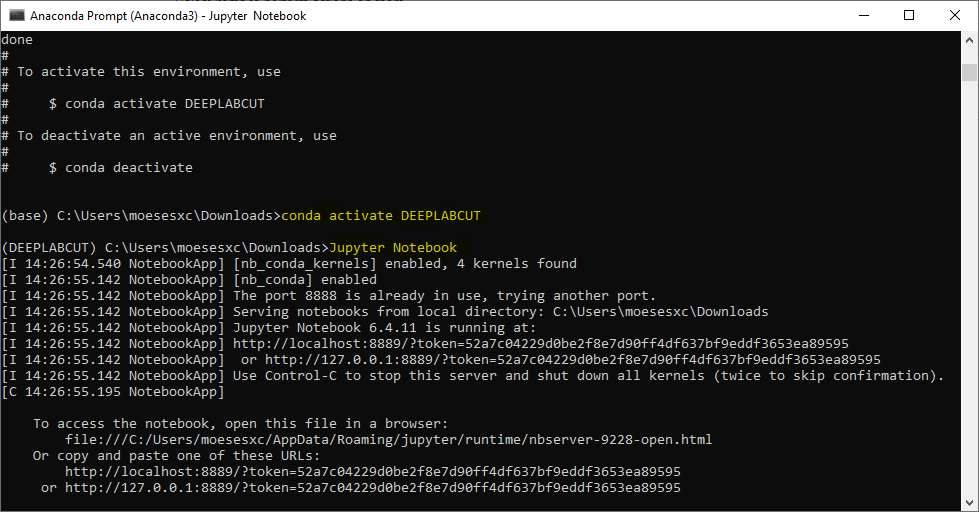
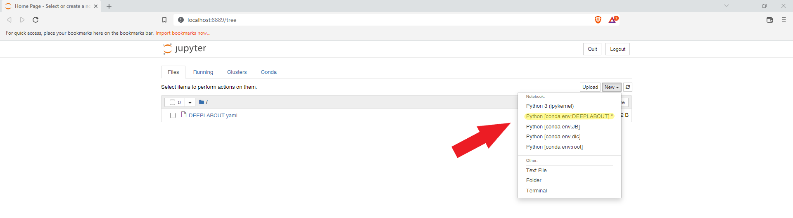
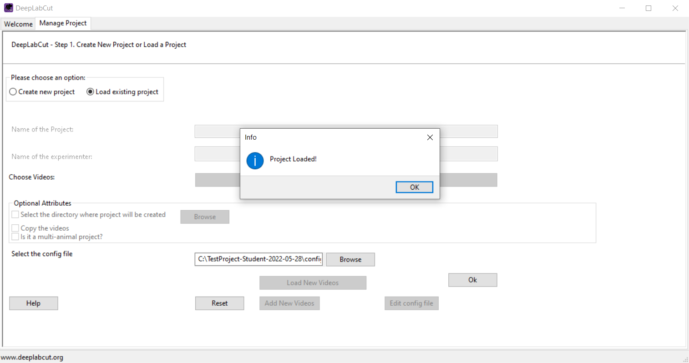
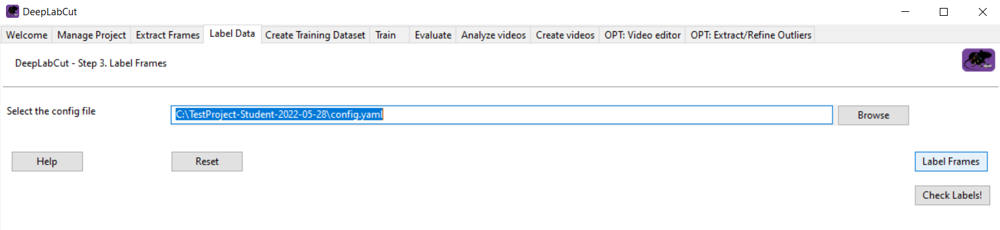
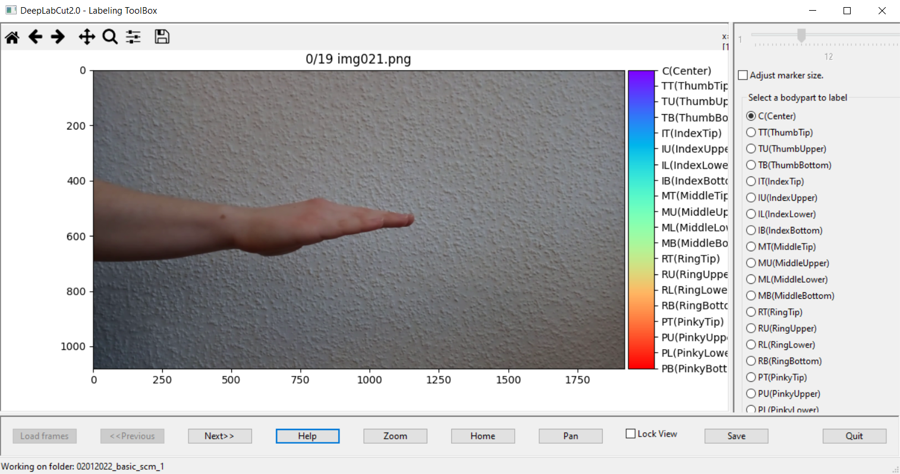
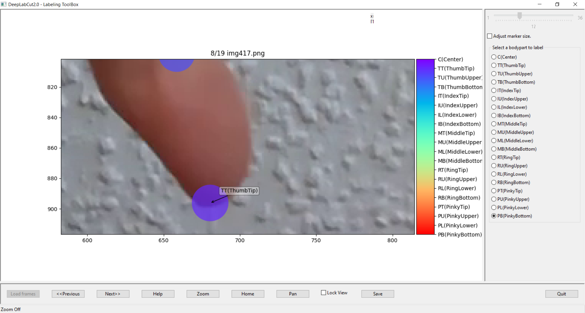
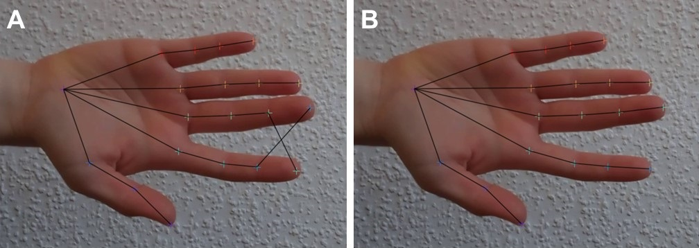

DeepLabCut - A Student’s Quick Start Guide
Contents
DeepLabCut - A Student’s Quick Start Guide¶
This guide adresses beginner DeepLabCut users (e.g. undergraduate students with little to no experience with operating python) and serves as an introduction to using DeepLabCut for video-based pose estimation. It follows the standard DeepLabCut workflow which was introduced by Nath et al. (2019) in one of the DeepLabCut key publications.
The tutorial is meant to give an impression of what a simple DeepLabCut project might look like and to serve as a template for the creation of new projects. It covers the steps of
Installing DeepLabCut.
Creating a DeepLabCut project & training dataset.
Training a DeepLabCut model.
Analyzing videos with a trained DeepLabCut model.
Refining the DeepLabCut model.
Note
For a more extensive insight into the functions of DeepLabCut, I point to the official DeepLabCut Documentation that is maintained by the DeepLabCut developer team.
What is DeepLabCut?¶
DeepLabCut is a python toolbox designed for markerless pose estimation of animals and is developed by the team of the Mathis lab of adaptive motor control. It is a video-based approach, meaning that users input video files and DeepLabCut outputs the positions of all tracked body parts for every frame of the video.
To do so, DeepLabCut utilizes a supervised machine learning algorithm. In practice, this means that frames are extracted from a video and manually labeled (= the user marks the points of interest to be tracked on each frame). These labeled frames are then used to train a neural network that can eventually recognize and label the defined points of interest on its own.
The resulting network (namely a DeepLabCut model) can be used to analyze new videos with respect to tracking the same points of interest.
Installation¶
The installation of DeepLabCut can be tricky when you are doing it for the first time. Since DeeplabCut is not yet one of the end-user optimized programs as one is used to, it has to be installed via the command line.
The easiest way to do so is by following the step by step instructions provided by the DeepLabCut developers. Simply start with the CONDA section and follow along beginning with Step 1.
In general, you will have to execute the following steps:
Install Anaconda. (💡 That’s a distribution platform for the Python programming language.)
Download the DeepLabCut Installation File.
Open Anaconda Prompt. (💡 That’s a command line application which was installed together with Anaconda.)
Change directory to the directory where the installation file was saved (e.g. in Anaconda Prompt type
cd Downloads).Create a virtual environment from the installation file. (Type
conda env create -f DEEPLABCUT.yaml; 💡 This will install DeepLabCut and all its dependencies.)Activate the environment. (Type
conda activate DEEPLABCUT)
Anaconda prompt commands
If you are unfamiliar with operating a command line interpreter, here are some tips on using Anaconda Prompt.
Type
conda env listto see a list of all your installed virtual environments (e.g. the DeepLabCut environment you created above should show up here).Type
conda listto see a list of all the packages installed in your active environment.Type
conda activate XYZto activate environment XYZ (You can see the name of the currently activated environment next to the file path on the left.)Type
conda deactivateto deactivate your current environment and return to the base environment.
Note, that whenever you are working with DeepLabCut, the environment in which DeepLabCut is installed must be activated.
That’s it. After completing the installation, the real DeepLabCutting can begin.
Do I need a GPU?¶
Training an artificial neural network (ANN) using DeepLabCut recquires a lot of computational power. Therefore, the DeepLabCut developers strongly recommend using a GPU for training the model but also for video analysis. Although it is technically possible to train and analyze on a CPU, in practice this isn’t practible, since even on a GPU the analysis can take several days to weeks (depending on the number and size of videos).
So yes, you may need a GPU in order to train an ANN and to analyze videos using a trained network.
It is possible to run DeepLabCut on a cloud-based computing platform, such as Google colab (that provides free GPU access). See the DeepLabCut GitHub repository for more information on this option. However, in my experience, the amount of time you get access to a GPU using this option is often not enough to train a model sufficiently.
Jupyter Notebooks¶
From this stage on, I find it easiest to create and manage DeepLabCut projects by using a Jupyter Notebook, as this will automatically log the project’s progress:
In Anaconda Prompt type Jupyter Notebook (note that your DeepLabCut environment should be activated).

From the Notebook Dashboard (the site that opens in your browser after running the above command), create a Jupyter Notebook by clicking on “New” and selecting your DeeplabCut environment (in Jupyter Notebooks, virtual environments are called “kernel”).

Now, you can start creating your DeepLabCut project by editing your Notebook!
Note
When you have downloaded this website in the .ipynb format and moved it to the directory from where you launched Jupyter Notebook, you can now open & edit it and use it as a template for your own DeepLabCut project.
Alternatively, you can write your own notebook from scratch and simply copy & paste the code snippets listed below.
Create a DeepLabCut Project¶
Import DeepLabCut¶
To have access to the numerous DeepLabCut functions, you must first import DeepLabCut into your python interpreter. In your Jupyter Notebook add a python code cell and runn the following function:
import deeplabcut
# Note: To get some feedback for the successful import, you can add the print function:
print(f'Successfully imported DeepLabCut version: {deeplabcut. __version__}')
Create Videolist¶
Create a variable named “videolist” that holds the paths to all the videos you want to include into the project. Simply write down all the file paths for the videos you want to analyze as a list:
videolist = ['Full/path/of/video/1', 'Full/path/of/video/2', 'Full/path/of/video/3']
# Note: In Windows, the file paths must be formated as r'C:\Full\path\of\video.MP4'
Create Project¶
To create a new DeepLabCut project, you simply have to run the function deeplabcut.create_new_project after customizing all its required parameters:
config_path = deeplabcut.create_new_project('Name of the project', 'Name of the experimenter', videolist, working_directory='Full path of the working directory', copy_videos=True/False, multianimal=True/False)
How to configure the function parameters
Here’s a list of the function’s parameters and the options you have to customize them:
Name of the project: Fill in your projects title.Name of the experimenter: Fill in your name.videolist: If you’ve defined a variable ‘videolist’ containing the paths to all your videofiles, you can leave this parameter as it is. Otherwise, you will have to manually fill in all your video file’s paths as a list into this parameter.working_directory: Fill in the path to the directory where you want your project to be created. DeepLabCut will then create a directory containing a configuration file and different subdirectories where your project will be stored.copy_videos: This parameter specifies if the videos from the videolist will be copied into a subdirectory (named ‘videos’). Setting this parameter to ‘False’ will lead to the creation of symbolic links to the videos. (Normally, I would recommend settingcopy_videosto ‘False’ because this saves memory capacity. However, if you want to move or rename the original video files after the project has been created, I recommend setting it to ‘True’.)multianimal: This parmater specifies what type of project you are creating. Set this to ‘True’ if your videos capture multiple subjects at once. Otherwise, choose ‘False’.
Important: Leave no blank spaces between words when filling in the parameters (not ‘My Project’, but ‘MyProject’)!
It is easiest to define a variable config path when creating the project (as shown above). This will make it easier to use other DeepLabCut functions during later stages of the project, as it will often require you to indicate your config.yaml file. However, you can also do this in an independent step after creating your project.
This is also how you can “reload” your project after closing and reopening the jupyter notebook. Simply run:
config_path = 'full/path/to/your/projects/config.yaml/file'
Note
For all DeepLabCut functions, you can always run deeplabcut.name_of_function? to call the embedded help function. This will show you e.g. a list with information on all the parameters of the respective function.
Customize the config.yaml file¶
After running deeplabcut.create_new_project, DeepLabCut created a new project directory within your selected working directory. Inside this project directory you find four prepared subdirectories (dlc-models, labeled-data, training-datasets, videos) and a configuration file named config.yaml.
The project’s directory structure
The following will be stored in the prepared subdirectories:
dlc-models: After training your model, this directory will hold the specialized model weights that you can later use to analyze new videos.labeled-data: This directory stores the extracted frames & manual annotated labels for each video.training-datasets: This directory stores the datasets that will be used to train the model.videos: This directory stores either the videos you want to analyze or symbolic links to the video files (depending on whether you setcopy_videos=True/Falsewhen creating the project).
At later stages of the project, new subdirectories can be added, such as evaluation-results.
The next step is now to customize the configuration file according to your requirements:
To do so, you first need to open the config.yaml file in the text editor of your choice (e.g. “Notepad++”, “Visual Studio Code”).
The first parameters in the config.yaml file (Task, scorer, date, multianimalproject) have been automatically filled in, when the project was created. The same is true for the project_path parameter and the list of your included videos in video_sets.
Whilst the first four parameters should not be changed throughout the project, the project_path parameter should be updated, when you move the project to another directory.
All other parameters in the configuration file are currently set to the DeepLabCut default and may need to be changed throughout the project.
Now, for the most important changes you have to make to the parameters in the config.yaml file in the beginning:
bodyparts: The whole point of DeepLabCut is to track different bodyparts on a given animal. Therefore, in this parameter you have to define the key features you want to track throughout your video files. Use the notation that is already given by the dummy entries in the config.file (e.g.- NameOfBodypart).numframes2pick: This parameter specifies, how many frames will be extracted from each of your video files in the following step for manual labeling. The total number of labeled frames will later make up the size of your training dataset. There is no fixed specification on how large the training dataset should be (as this largely depends on your amount of videos, video quality, number of included animals, …). However, the general rule is: the bigger, the better. For a start, I would aim for a size of at least 200 frames. Therefore, only adapt this parameter if you have a whole lot of videos. Otherwise, just leave it as it is for now.skeleton: Here, you can specify connections between your tracked bodyparts. This will become relevant after the next step, when you plot your manually annotated frames to check whether all labels were positioned correctly. As with thebodyparts, take care to use the exact syntax that is specified in the dummy entries (e.g. tabs & spaces!).
These are the most important adjustments to the configuration file that you need to make when you start a new project. In the dropdown entry below, you find a summary of all the parameters in the configuration file, taken from the DeepLabCut documentation. Most of them will become relevant later, during model training.
Summary of all parameters in the configuration file
Here is a comprehensive glossary on all the parameters in the config.yaml file.
 Figure taken from DeepLabCut Documentation/DeepLabCut user Guide (for single animal projects).
Figure taken from DeepLabCut Documentation/DeepLabCut user Guide (for single animal projects).
Create a training dataset¶
Extract frames¶
The core of a DeepLabCut project is the training dataset that is used to train the resulting neural network. The training dataset is a set of manually labeled frames that were extracted from the video files. The quality of the training dataset will determine the performance (= the tracking accuracy) of the trained model.
As stated above, there is no fixed specification on how many frames should be extracted. A sufficient training dataset should include frames from all shown behaviors across all individuals, lightning conditions & settings depicted in the videos. Therefore, a relatively large data set (consisting of a large number of frames) is desirable.
The following function will extract the amount of frames per video specified in the configuration file (numframes2pick) and store them in individual subdirectories within the labeled-data folder:
deeplabcut.extract_frames(config_path, mode='automatic/manual', algo='uniform/kmeans', userfeedback=False, crop=True/False)
Note, that you will have to adapt the parameters according to your whishes:
mode: Here, you specify whether you want to manually pick the frames to be included into your training dataset (´manual´) or if you want DeepLabCut to do it for you according to a specific algorithm you can define in the next parameter (automatic).algo: When you set themodeparameter toautomatic, here, you specify the algorithm that will be used to extract frames. Setting this parameter touniformwill cause DeepLabCut to select frames in a temporally uniformly distributed way (e.g. “one frame per 1000 frames”). Normally, I recommend setting this parameter tokmeans. This will select frames by clustering based on visual appereance - meaning, it will select frames that depict different forms of behavior even if they occur only occasionally throughout the video. However, slecting frames by clutering is also more time consuming than selecting them uniformly.userfeedback: This parameter is set toFalseper default. Setting this toTruewill cause DeepLabCut to check for user approval for every frame throughout the extraction (very time consuming!).crop: Setting this parameter toTruewill cause a GUI to pop up and ask the user to draw a box onto the frame, selecting the area of interest. The extracted frames will then be cropped in into this are. (This usually only makes sense, when your camera captures a much larger space than were the behavior of interest took place.)
Label frames¶
The next step is now to manually label all the extracted frames. This can take up to several hours (depending on the size of your dataset and the number of key features) and should be done very carefully. As said before - the quality of the training dataset determines the tracking performance of the trained model.
To open the labeling GUI, I recommend using the main DeepLabCut GUI. To do so,
open a new window of Anaconda Prompt.
activate your DeepLabCut environment.
type
python -m deeplabcut.
A new window will open (this might take some time).
Click on “Manage Project”, then choose “Load existing project”. Click on “Browse” to select your project’s config.yaml file and confirm.
After confirming, your project is loaded into the DeepLabCut GUI. 
Next, change to “Label Data”. The path to your configuration file is already filled in, so you can directly launch the labeling GUI by clicking on “Label Frames”.
To open the labeling GUI, click on “Label Frames”. 
This will open the DeepLabCut labeling GUI, a tool that allows for the manual annotation of the extracted frames.
In the GUI, click on “Load Frames”, then select one of the subdirectories with the extracted frames (you find them in “labeled-data”) and click “ok”.
It can take a few moments until the frames are fully loaded into the GUI. 
Now, you can start to label your keypoints of interest. Check out the box below for more information on how to label frames efficiently.
Some tips for the manual labeling process
Place a label by right-clicking on the respective spot in the frame.
Click and hold the left mouse key to dag & drop labels that are already annotated.
Press Ctrl + c to copy all labels from the previous frame (take care not to overwrite already annotated frames while using this shortcut).
Take care to consistently label the same spots.
Make sure you don’t label any bodyparts that aren’t visible in a given frame (e.g. because they are occluded by other bodyparts). Only label bodyparts that are really visible.
Since the accuracy of the manually placed labels determines to a large extent the labeling performance of your resulting DeepLabCut model, you should allow enough time for this part and place the labels as accurately as possible.
In my experience, it is best to first label all visible bodyparts in a frame and then use the zoom function to enlarge smaller sections of the image and refine the position of the set labels. To do this, click on the zoom button and drag a box over the section you want to enlarge. Click on Home to return to the overall view. 
I recommend that you decide in advance on a logical order in which to label the individual bodyparts, to enable a sensible workflow. The order in which the labels are displayed in the right column is determined by the order in which they are listed in the configuration file. To adapt tis labeling workflow, just change the order of the bodyparts in the
config.yamlfile.Save your progress! When you are done labeling a set of frames, click “Save”. The positions of the labels you set are then saved within the subdirectories for the respective video in “labeled-data” as a .csv file and in .h5 format. You can also save the labels in between and then reopen the same set of labels to continue labeling.
To close the GUI, click on “Quit”. DeepLabCut will then ask, whether you want to label another set of frames. To automatically load another set of frames, click on “Yes”. However, I recommend to close and reopen the GUI every now and then, to prevent the command processing speed from becoming too slow.
Check the labeled frames¶
After manual labeling is complete, the labeled frames should be checked for any errors. Particularly serious are errors where, for example, the sides of the body parts to be labeled have been systematically swapped (e.g., right and left hands mixed up). Such errors in the training dataset can lead to systematic label errors in the final model and should therefore be avoided.
To check for labeling errors, DeepLabCut provides the deeplabcut.check_labels function. The function plots all extracted frames together with the manually set labels and the user-defined skeleton:
deeplabcut.check_labels(config_path, visualizeindividuals=True/False)
To detect possible errors, all labeled frames should now be opened and the position of the labels checked. In order to be able to quickly detect errors (such as swapped label positions), it is recommended to have previously created a comprehensive skeleton in the config.yaml file.
The manually set labels will be plotted directly onto the extracted frames. If you detect any errors while checking the labels, you can simply correct them by reopening the labeling GUI and changing the respective labels positions.  A: Discovered labeling error with mixed up labels. B: Corrected Frame.
Create training dataset¶
When you are happy with all your set labels, you can combine them into a training dataset that can be used to train your DeepLabCut model.
To do so, use the function:
deeplabcut.create_training_dataset(config_path)
This function takes all the files with the user-set labels positions and combines them into one big training (and a smaller test) dataset.
As the name suggests, the training dataset is used to train the model. The model generated in this way is then tested on the test dataset for its performance on previously “unseen” frames.
The division of the frames into training and test data set is defined in the config.yaml file in the TrainingFraction parameter. By default, this parameter is set to 0.95, which means that 95% of the manually labeled frames are used for training and 5% for testing the trained model.
There are a number of additional parameters that can be adjusted when creating a training dataset. For a complete list of parameters, please see the DeepLabCut documentation.
Train the Network¶
After a training dataset is created, the next step is to train a DeepLabCut model.
This is as simple as executing the following function (Note that a GPU is highly recommended for this step, as training a neural network on a CPU will take very long):
deeplabcut.train_network(config_path)
Running the function as depicted above, will lead to DeepLabCut using all the default settings for the function parameters.
However, as the trained model will be the major outcome of a DeepLabCut project, you might want to dive deeper into the different options for model training.
You can for example specify what type of neural network is trained (e.g. residual neural networks (resnet) with different numbers of layers).
I highly recommend to check out the DeepLabCut Documentation to make yourself familiar with the different options on model training.
Evaluate network¶
To determine the quality of the trained model, you can evaluate the model’s labeling performance by running:
deeplabcut.evaluate_network(config_path, plotting=True)
This will create a new subdirectory in your project directory where the evaluation results are stored. Evaluation results (namely the test- and training error) are then written into a .csv file that can be inspected with any common text editor.
Setting the plotting parameter to True will plot all the labels of the training & test dataset together with the label predictions made by the model and the manually set labels. Manually set labels are displayed as a plus symbol “+” and the model’s predictions either as a dot (for predictions with a high likelyhood) or as an “x” (for predictions with a low likelyhood)
Note
The likelihood of the model’s predictions is displayed with respect to the parameter p-cutoff that is set in the config.yaml file. The default value is 0.7, meaning that predictions with a likelihood of < 0.7 will be displayed as uncertain predictions.
If you find that the model’s labeling accuracy is not yet sufficient, you should extract and label more frames from the video files, create a novel training dataset and retrain the model.
Analyze videos¶
When you are happy with your model’s labeling accuracy on the test and training frames, you can start to analyze the original video footage. Note that this step can be time consuming (even more than the model training), depending on the amount and size of your video data.
To start the analysis, run:
deeplabcut.analyze_videos(config_path, videolist, save_as_csv=True)
The analysis results will be stored in the “videos” subdirectory. For each video, there will be a .csv and a .h5 file created, that holds the model’s label predictions for every frame of the video.
As the raw tracking results are often messy, it is recommended to filter the model’s predictions. This can be done by applying a median filter, using the function:
deeplabcut.filterpredictions(config_path, videolist)
There is also an option to generate video files with the model set labels:
deeplabcut.plot_trajectories(config_path, ['fullpath/TestProject/videos/videofilename.mp4'])
However, I would recommend not to plot the labels for all analyzed videos, since these then naturally also take up twice as much storage space as the original videos. (Therefore, replace the variable “videolist” by a list of one or few exemplary videos.)
Refine the network¶
After training & evaulating the model and seeing first analysis results, you might conclude that your model’s labeling accuracy is not yet to your satisfaction.
Don’t worry, there is an easy way to fix it: Refine your model.
In particular, this means that you should label more data to create a more comprehensive training dataset.
To do so, you can extract outlier frames, meaning that you extract frames with a particuarly low overall labeling likelihood.
First, run the function:
deeplabcut.extract_outlier_frames(config_path, videolist)
Now, you can start to relabel the extracted frames. You can do so by either launching the DeepLabCut labeling GUI (using the main GUI as described above) or by launching a separate “refinement” GUI. This will plot all machine-set labels on the extracted frames and allow you to drag & draw them to their correct positions.
As with the “normal” labeling GUI, I recommend to launch the refinement GUI using the main DeepLabCut GUI, as this will prevent any complications that can arise from using the Jupyter Notebook for this part.
First, open your project in the main DeepLabCut GUI.
Then, change to “Refine Labels” and click on “Label Frames”.
The refinement GUI will open in front of you, much as the labeling GUI did earlier. The only real difference is, that you will have to insert a specific p-cutoff in the beginning, specifying how the machine-set labels are displayed in the GUI.
Labels with a likelihood lower than the specified p-cutoff will be displayed as circles, whilst labels with a higher likelihood are displayed as larger dots on the frame.
Note
I recommend to use the ‘normal’ labeling GUI for sets frames with very poor labeling accuracy, as I find it very time consuming to ‘search’ for the individual labels throughout every frame. In the “normal” labeling GUI, the extracted oulier frames will be displayed with no labels in contrast to the already manually labeled frames of the original training dataset.
If the overall labeling accuracy isn’t too bad, it can however be faster to use the refinement GUI.
When you are satisfied with the positions of the labels, you can merge the refined labels to your original training dataset by running:
deeplabcut.merge_datasets(config_path)
Afterwards, you can refine the actual model by training it with the extended training dataset.
To do so, simply run deeplabcut.train_network again (see above).
If the results are satisfactory, you can now reanalyze new videos as described above. Otherwise, you can extract and label new outlier frames and continue to retrain the model, until it reaches a satisfactory labeling performance.
Helpful links¶
Comprehensive DeeplabCut Documentation by the DLC developers
For more information on jupyter notebooks, visit Project Jupyter’s homepage
References¶
DeepLabCut Documentation. https://deeplabcut.github.io/DeepLabCut/docs/intro.html
Nath, T., Mathis, A., Chen, A. C., Patel, A., Bethge, M., & Mathis, M. W. (2019). Using DeepLabCut for 3D markerless pose estimation across species and behaviors. Nature Protocols, 14(7), 2152–2176. https://doi.org/10.1038/s41596-019-0176-0